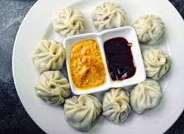

MOMOS

Ingredients list
- Plain Flour
- Cabbage/Meat
- Oil
- Water
- Spices
Steps to Make:
- Chop the Vegetables/Meat .
- Add Spices and necessary items.
- Mix Plain Flour with water and make some small balls with it.
- Now use a belan to make it circular and flat.
- Fill that with previously chopped Vegetables/Meat
- Use Special Utensils and Cook the Momo in Steam for 10-20 minutes
- Serve that with a Chutney. Y
- Yummy Delicious your meal is ready.